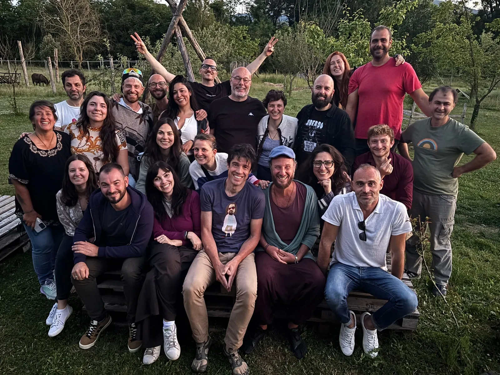
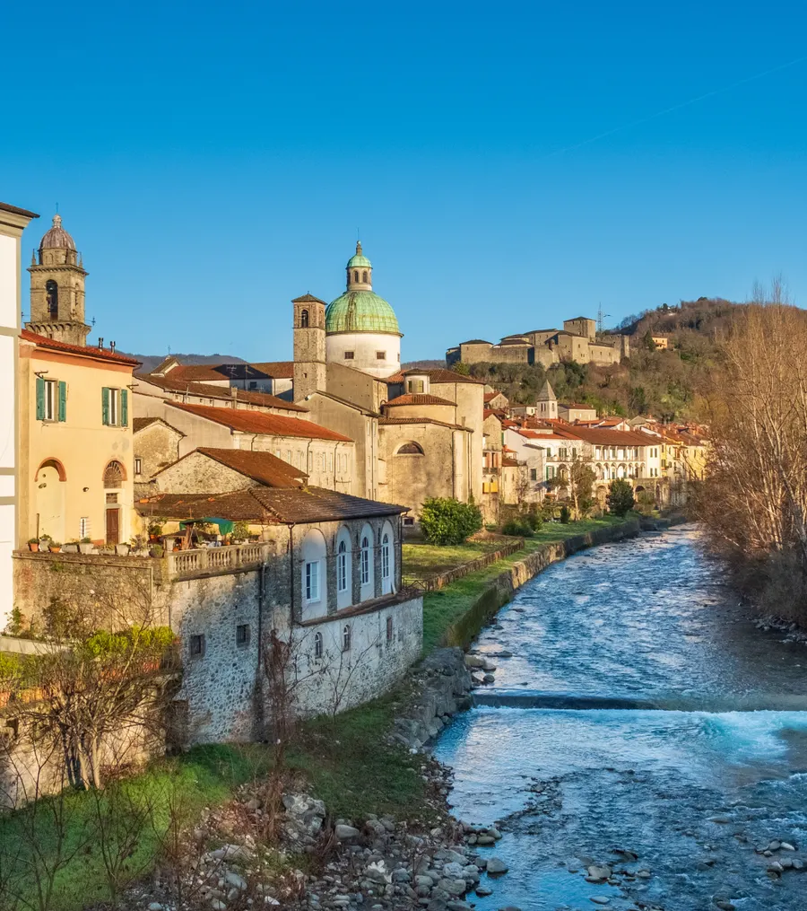
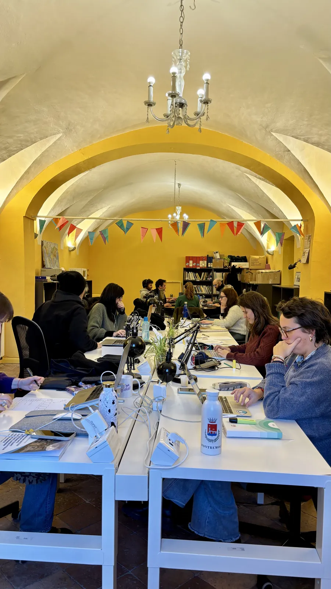
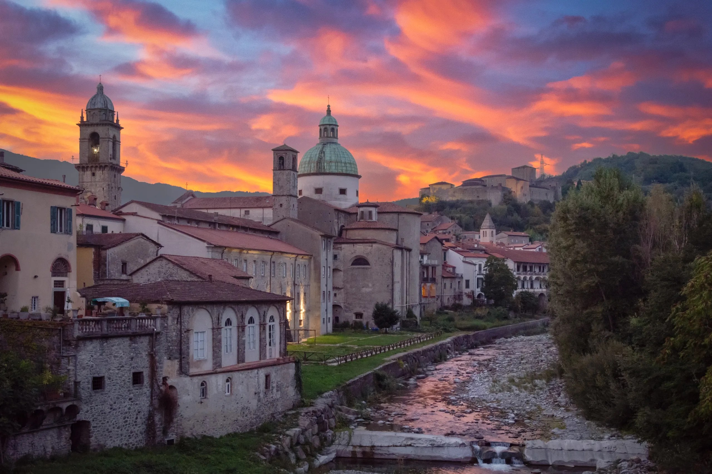

Chi siamo
Start Working è il progetto che sta trasformando la Lunigiana in un punto di riferimento per nomadi digitali e lavoratori da remoto.
Tutto nasce da un sogno: ripopolare l'Appennino attirando professionisti da ogni parte del mondo. Grazie a una combinazione di servizi, spazi di coworking, iniziative culturali e la bellezza autentica della Lunigiana, il progetto ha dato vita a una vivace comunità che vive e valorizza attivamente il territorio.
Qui puoi trovare non solo un luogo in cui lavorare, ma un'esperienza che connette persone, idee e opportunità.



Da dove veniamo
Dal 2020 abbiamo accolto più di 200 persone: c'è chi è rimasto qualche giorno e chi ha finito per comprare una casa, o anche due! Un po' da tutta Italia e da mezzo mondo, 11 paesi diversi hanno lasciato un'impronta qui.
L'ultima arrivata è Marianna, 34 anni, da Milano: ci ha raggiunti l'11 novembre 2026.
Trascina per spostarti, Ctrl + rotella per zoomareUsa due dita per esplorare la mappaClicca un paese per vedere chi viene da lì.
Dove viviamo
Pontremoli è in Lunigiana, in Toscana. Ma non la Toscana che ti aspetti: niente dolci colline e cipressi, da queste parti. Siamo in una zona di confine fra Toscana, Liguria ed Emilia, in piena via Francigena, da secoli punto di passaggio per pellegrini e viandanti.
Qui puoi trovare un mix di fiumi e boschi, palazzi nobiliari e piatti tipici contadini, ponti e castelli, sentieri di montagna e sdruccioli di piccoli borghi medievali. La Lunigiana è una terra selvaggia e irriverente, stropicciata e spettinata, profondamente femmina e fertile.
Non ti stupire se, andandotene, questo posto ti sarà rimasto dentro, senza neanche sapere perché.



Dove lavoriamo
Nel palazzo comunale di Pontremoli, in una sala del Quattrocento che il Comune mette a disposizione gratuitamente. Questo è il nostro coworking. Otto postazioni dedicate, otto condivise, una cabina per le call e la fibra ottica, dal lunedì al sabato. Nessun abbonamento, nessun costo nascosto.



Cosa facciamo
Aperitivi, escursioni, talk e cene: i nostri eventi sono aperti a tutti, e sono il pretesto perfetto per venirci a trovare e a conoscerci. Cosa aspetti a scriverci?
Guardaci in azione
Un video vale mille immagini: eccone tre. Un nostro aperitivo, la storia di chi ha lasciato la città per vivere nella natura e il nostro intervento a un TEDx. Premi play, poi decidi tu.
Le nostre storie
Che tu ti fermi una settimana o una vita, da qui te ne vai con un pezzo di Pontremoli nel cuore. Ecco cosa raccontano alcune delle persone che sono passate di qui.
Dicono di noi
Dal Sole 24 Ore al Wall Street Journal, in questi anni giornali e televisioni sono venuti a vedere cosa succede in un borgo dell'Appennino che si ripopola. Scopri cosa scrivono di noi: clicca su un ritaglio per leggerlo.
- Il Sole 24 Ore 2020Smart working in Toscana: l’hospitality si reinventa con affitti scontati, banda ultralarga e servizi on demand
- Wall Street Journal 2022Are you a digital nomad? European locales want remote workers
- Corriere della Sera 2020I giovani di Pontremoli e Start Working: «Così salviamo il nostro borgo»
- Il Fatto Quotidiano 2023La sfida della Toscana: rilanciare in chiave smart l’economia dei territori e gli stili di vita
- La Nazione 2023Se il lavoro è più agile. Sessanta smartworkers formano associazione di promozione sociale
- DoveIl servizio sulla rivista
- MediasetStart Working Pontremoli a E-Planet, su Italia 1
- Italia che Cambia 2023Start Working Pontremoli
- Il Tirreno 2020Anche Pontremoli si candida come posto ideale per chi lavora in smart working
- Avvenire 2020L’articolo del 5 novembre 2020
- In Toscana 2020Smart working a Pontremoli. I giovani: «Venite a scoprire il borgo, vi ospitiamo noi»
- Città della Spezia 2023La Lunigiana come luogo in cui vivere e lavorare da remoto: ecco il progetto Start Working
- Voce Apuana 2023Start Working Pontremoli, il progetto di rendere la città il polo del lavoro da casa
- Liguria24 2023La Lunigiana come luogo in cui vivere e lavorare da remoto
- Eco della Lunigiana 2023Nasce Start Working Pontremoli APS
- Il Corriere Apuano 2020Cogliere le opportunità dello smart working in Lunigiana
Domande frequenti
Le cose che ci chiedono più spesso, da chi sta pensando di venire per un mese a chi vuole restare per sempre. Per tutto il resto, scrivici: rispondiamo a tutti.
In cosa consiste il progetto?
Start Working vuole attirare in Lunigiana lavoratori da remoto che desiderano trasferirsi qui per un periodo più o meno lungo e lavorare in smart working da questo territorio. Veniamo da percorsi diversi, ma condividiamo la voglia di far parte di una comunità attiva, lontano dal caos delle grandi città.
Che età hanno le persone?
Siamo una comunità molto varia: a Pontremoli sono arrivate persone dai 25 ai 60 anni. Quello che conta è avere lo spirito giusto e tanta voglia di condividere.
Per quanto tempo si ferma chi visita?
Molti arrivano per un periodo breve, uno o due mesi, per conoscerci e provare sulla propria pelle come si vive qui. La maggior parte poi decide di restare, e qualcuno ha anche comprato casa!
Gestite voi lo spazio di coworking?
No, lo spazio è gestito dal Comune di Pontremoli. Per informazioni o per visitarlo scrivi a coworking@comune.pontremoli.ms.it o chiama lo 0187 4601231.
Quanto costa l'utilizzo del coworking?
Nulla! Il Comune di Pontremoli mette lo spazio a disposizione gratuitamente. Puoi usarlo tutto il giorno negli orari di apertura del palazzo comunale, dal lunedì al sabato.
Mi aiutate a trovare un alloggio?
Non siamo agenti immobiliari e non abbiamo immobili in gestione, ma saremo felici di darti una mano nella ricerca!
Offrite lavoro?
No: Start Working Pontremoli è un'associazione, non un'impresa. Siamo tutti volontari e mettiamo il nostro tempo a disposizione della comunità.
Pontremoli
The Place To Be™
Un borgo di torri e ponti medievali nel cuore della Lunigiana: community, coworking, natura, eventi e servizi, tutto a portata di piedi. Scopri di più

Come unirti a noi
Scrivici e raccontaci chi sei, cosa fai e cosa cerchi: rispondiamo a tutti. Poi organizziamo una visita di qualche giorno per farti scoprire Pontremoli, il coworking e la comunità. E se decidi di trasferirti, ti aiutiamo in tutto, dalla casa alla prima spesa.
Puoi scriverci sui social
Inviarci un'e-mail a info@start-working.it
Oppure spedirci una lettera!
Lettera spedita!
Grazie! Abbiamo ricevuto il tuo messaggio e ti risponderemo presto.